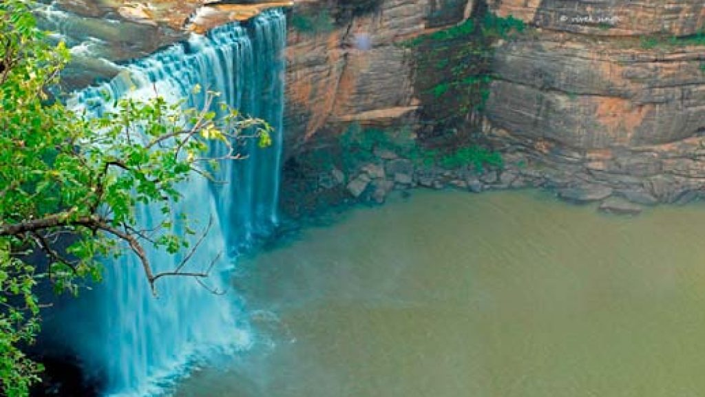
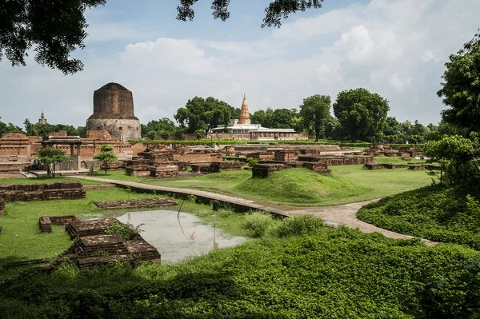
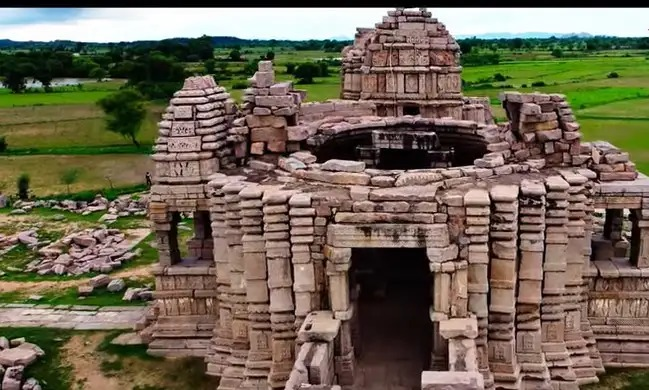
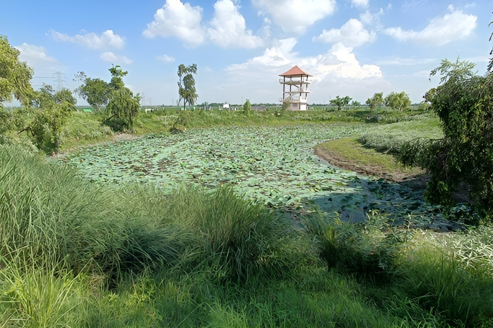

Explore Mystical Places
DevDari
The Rajdari and Devdari waterfalls are found in the Chandraprabha Wildlife Sanctuary. The sanctuary was established to conserve Asiatic lions and though their population has dwindled, there are several species of animals and birds that live here. Apart from the animals and birds, the sanctuary is home to several other attractions, more notably the Rajdari and Devdari waterfalls. The crystal clear waters, gurgling over the rocks present a breathtaking sight. The scenic, tranquil surroundings lend a sense of mysticism to the experience. People usually come here for a day trip and though there is no accommodation here, there are several eateries here to serve snacks and drinks.
Sarnath
Sarnath is a town northeast of Varanasi, in Uttar Pradesh, India. Sarnath is one of the eight most important pilgrimage sites for Buddhists, and has been nominated to become a UNESCO World Heritage Site.
Mahoba Rock Paintings & Suraj Kund
Mahoba Rock Paintings & Suraj Kund. Mahoba, a city in the Bundelkhand region of Uttar Pradesh, is home to a significant historical site featuring a Sun Temple and the associated "Suraj Kund" (Sun Reservoir). It is also known for nearby rock formations that contain ancient art.
Surha Taal Lake (Ballia District)
Surha Taal Lake (Ballia District). Surha Taal lies near the town of Bansdih in Ballia. The lake spreads across a large area and attracts hundreds of migratory birds every year. During the winter season, bird watchers and nature lovers flock to the lake to witness its rich avian life. Lush greenery, open skies, and the soothing sound of water create a peaceful environment for visitors.